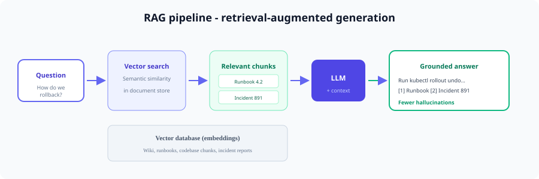
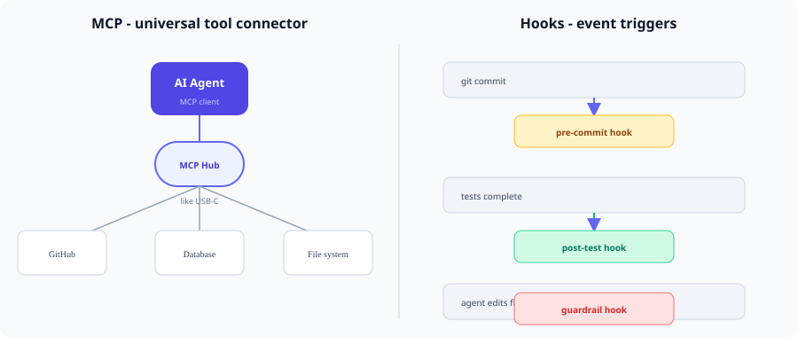
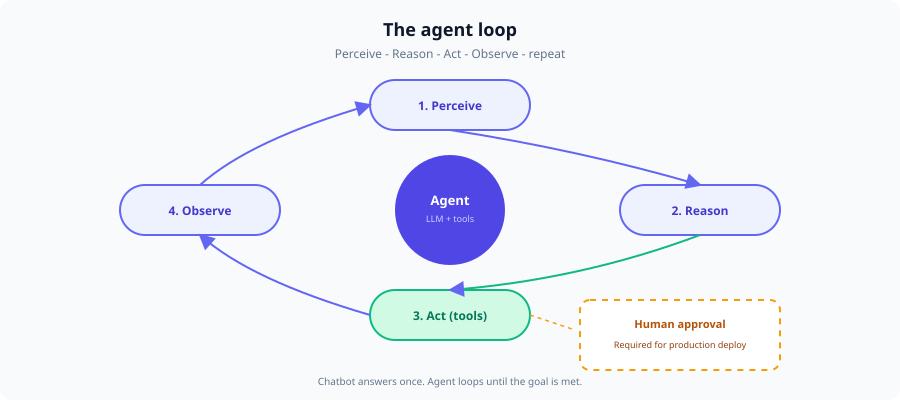

Agentic AI in CI/CD
A complete, plain-English journey from "what is AI?" all the way to AI agents that build, test, and ship software automatically. Learn the vocabulary, the building blocks, and how it all comes together — then test yourself with 100 interactive questions.
Prerequisites & What is AI?
What you need before you start
Good news: this tutorial assumes zero programming experience. You only need three things:
- Curiosity. If you can use a web browser and type a message into a chat box, you are ready.
- A web browser. Chrome, Edge, Safari, or Firefox — anything modern works.
- Optional: a free AI account. Something like ChatGPT, Claude, or Gemini, so you can try ideas as you read. Not required, but it makes concepts "click" faster.
Two words will appear a lot. Let's define them in the simplest way possible:
- CI/CD — a way to automatically build, test, and ship software. We cover it in detail later; for now, picture a robot assembly line for code.
- Agent — software that can take actions on its own to reach a goal, not just answer a question.

So, what is Artificial Intelligence?
Artificial Intelligence (AI) is software that performs tasks we normally associate with human thinking — understanding language, recognizing patterns, making decisions, or generating new content. Think of it as a very well-read assistant: it has seen an enormous amount of examples and uses them to make smart guesses.
Analogy: A traditional program is like a vending machine — press B4, get exactly the same snack every time. AI is more like an experienced chef — give it ingredients and a request, and it improvises a reasonable dish based on everything it has tasted before. The chef might not be perfect, but it adapts.
A few useful distinctions for beginners:
- Narrow AI — good at one thing (spam filters, photo tagging, chatbots). This is all the AI that exists today.
- General AI — hypothetical human-level intelligence across any task. Does not exist yet.
- Generative AI — AI that creates new content (text, images, code). This is the family that powers the tools in this tutorial.
Throughout this tutorial we focus on generative AI and how it grows up into agents that can help run a software delivery pipeline.
Large Language Models (LLMs)
A Large Language Model (LLM) is the "brain" behind modern AI assistants. It is a program trained on a massive amount of text — books, articles, websites, code — until it becomes extremely good at one deceptively simple task: predicting the next word.
Analogy: Think of the autocomplete on your phone, but supercharged a million times. Your phone guesses the next word; an LLM can guess the next paragraph, the next function of code, or a full essay — and it stays on-topic because it has "read" so much.
A few terms you'll hear
- Tokens — LLMs don't read whole words; they read chunks called tokens (roughly 3–4 characters). "Hamburger" might be 2–3 tokens. Pricing and limits are usually measured in tokens.
- Parameters — the internal "dials" the model learned during training. More parameters often means more capability (but also more cost).
- Training vs. inference — training is the one-time, expensive process of teaching the model. Inference is each time you actually use it to get an answer.
- Hallucination — when an LLM confidently states something that is wrong. Because it predicts plausible text, it can invent facts. Always verify important output.

Crucially, an LLM by itself only produces text. It can't click buttons, run tests, or deploy code. To do useful work in CI/CD, we wrap the LLM with extra abilities — context, memory, tools, and rules — which is exactly what the rest of this tutorial is about.
Prompt Engineering
A prompt is simply the instruction you give an LLM. Prompt engineering is the craft of writing that instruction well so you get a useful, reliable answer. Because the model can't read your mind, the quality of your prompt hugely affects the quality of the result.
Analogy: Imagine hiring a brilliant but very literal intern who just started today. They know a lot but know nothing about your situation. The clearer your instructions — goal, context, format — the better their work.
What makes a "good prompt"?
- Role — tell the model who to act as ("You are an expert Python reviewer").
- Task — state the goal clearly and specifically.
- Context — provide the relevant background, code, or constraints.
- Format — say how you want the answer (bullet list, JSON, a table).
- Examples — showing one or two examples ("few-shot") often beats explaining.
System prompt vs. user prompt
The system prompt is a special, behind-the-scenes instruction that sets the AI's overall behavior, personality, and rules for the whole conversation. The user prompt is your individual message. Think of the system prompt as a company's employee handbook ("always be polite, never share secrets, follow these steps") and the user prompt as a specific customer request. In CI/CD agents, the system prompt is where you encode safety rules like "never deploy to production without approval."

Context & Context Engineering
Context is all the information the model can "see" while answering your current request — your prompt, the recent conversation, any documents or code you pasted in, and tool results. The model has no memory of anything outside this window.
The context window is the maximum amount of text (measured in tokens) the model can consider at once. Like a desk: only so many papers fit on it. Put the wrong papers there and the model gets confused; leave out the right ones and it can't help.
Context engineering
Context engineering is the discipline of choosing what to put into that window, in what order, and in what form — so the model has exactly what it needs and nothing that distracts it. If prompt engineering is writing the question well, context engineering is curating the model's entire workspace.
- Relevance: include the code file that's actually broken, not the whole repository.
- Recency & order: the model pays special attention to the start and end of the context.
- Compression: summarize long histories so they still fit.
- Noise control: too much irrelevant text actively hurts answers.
In CI/CD agents, good context engineering means automatically pulling in the failing test log, the relevant source file, and the project's coding standards — and leaving out everything else.

RAG — Retrieval-Augmented Generation
An LLM only knows what it learned during training, which has a cutoff date, and it knows nothing about your private documents. RAG (Retrieval-Augmented Generation) fixes this by looking things up first, then letting the model answer using what it found.
Analogy: An open-book exam. Instead of relying purely on memory, the student first finds the relevant page in the textbook, then writes the answer using that page. RAG lets the AI "open the book" — your wiki, your codebase, your runbooks — before answering.
How RAG works (in plain terms)
- Your documents are chopped into chunks and turned into embeddings (numerical "meaning fingerprints") stored in a vector database.
- When you ask a question, the system finds the chunks whose meaning is closest to your question — semantic search, not just keyword matching.
- Those chunks are added to the context, and the LLM answers grounded in them.
Why it matters: RAG reduces hallucinations (the answer is grounded in real sources), keeps answers up to date without retraining, and lets the AI use private knowledge. In CI/CD, RAG can pull the right section of your deployment docs or past incident reports before the agent acts.

State, Memory & Structured Output
By default, an LLM is stateless — it forgets everything the moment a request ends, like a person with no short- or long-term memory who reintroduces themselves every sentence. To build useful agents, we add state and memory.
- State — the current situation of a task: what step we're on, what's been done, what's pending. In CI/CD, the state might be "tests passed, awaiting deploy approval."
- Short-term memory — the ongoing conversation, kept inside the context window.
- Long-term memory — facts saved outside the model (in a database or files) and recalled later, e.g. "this project always deploys on Fridays."
Structured output
Normally an LLM replies in free-flowing prose, which is hard for other software to use. Structured output forces the model to answer in a strict, predictable format — most often JSON — so a program can read it reliably.
Analogy: The difference between a friend casually telling you about an event ("yeah it's Friday-ish, downtown somewhere") versus a calendar invite with exact fields for date, time, and location. Machines need the calendar invite. For example, instead of a paragraph, an agent might return {"action": "deploy", "environment": "staging", "approved": false} — which the pipeline can act on automatically.

MCP & Hooks
MCP — Model Context Protocol
For an AI to do real work it needs tools: read a file, query a database, call GitHub, run a test. The Model Context Protocol (MCP) is an open standard that lets AI applications connect to these tools and data sources in a consistent way.
Analogy: MCP is like a USB-C port for AI. Before USB, every device needed its own special cable. USB-C created one universal plug. Likewise, instead of writing custom glue for every tool, an "MCP server" exposes a tool in a standard shape, and any MCP-compatible AI can use it. Build the connector once, reuse it everywhere.
Hooks
Hooks are scripts that run automatically at specific moments — "when X happens, do Y." They let you insert your own logic into a process without changing its core.
Analogy: A motion-sensor light. You don't rewire the house; you just say "when motion is detected, turn on the light." In CI/CD and agent workflows, hooks fire on events like before a commit, after tests run, or before an agent edits a file. They are perfect for enforcing rules: a hook can block an agent's change if it would delete a critical file, or auto-run a code formatter after every edit.

Agentic AI Fundamentals
Now we combine everything. Agentic AI is an LLM given a goal, plus the ability to plan, use tools, observe results, and try again — looping until the goal is met. A chatbot answers; an agent acts.
Analogy: A chatbot is a knowledgeable consultant who gives advice and stops. An agent is a contractor you hire to actually renovate the kitchen — they make a plan, buy materials, do the work, check it, and fix mistakes, coming back to you only for big decisions.
The agent loop
- Perceive — read the goal and current context/state.
- Reason / Plan — decide the next step.
- Act — use a tool (run a test, edit a file, call an API via MCP).
- Observe — look at the result of that action.
- Repeat — loop until done, adjusting along the way.
This loop is why agents need everything we've covered: context and memory to know the situation, tools/MCP to act, structured output to make decisions software can execute, and hooks plus a strong system prompt to stay safe. Important beginner caution: because agents take real actions, they need guardrails and human-in-the-loop approval for risky steps.

Agentic AI in CI/CD
First, what is CI/CD?
- CI — Continuous Integration: every time a developer saves new code, it is automatically merged, built, and tested. Catching problems early, like a spell-checker that runs as you type.
- CD — Continuous Delivery/Deployment: code that passes is automatically prepared for release (delivery) or pushed live (deployment).
A pipeline is the automated sequence of stages — build → test → deploy — that code travels through. Traditional pipelines follow fixed scripts: powerful, but rigid. They can't reason about why a test failed.
Where agents add value
An agentic AI plugged into the pipeline can understand events and respond intelligently rather than just running fixed steps:
- Auto-fix failing builds: read the error log, locate the bug, propose a fix, and open a pull request.
- Intelligent code review: comment on a PR with real reasoning about risks and style.
- Triage & root-cause: when a deploy fails, gather logs (often via RAG over past incidents) and explain the likely cause.
- Smart rollbacks: detect a bad release and recommend or trigger a rollback — ideally behind a human-approval gate.
- Release notes & docs: summarize what changed in plain language.
Safety is non-negotiable here. Use hooks to enforce rules, a strict system prompt for guardrails, structured output so the pipeline can act on decisions, and human-in-the-loop approval before anything touches production.

MVP Specification & Popular AI Tools
What is an MVP?
An MVP (Minimum Viable Product) is the simplest version of a product that still delivers real value and lets you learn from real users. The goal is to test your core idea quickly without building everything.
Analogy: If the goal is "help people get from A to B," the MVP is a skateboard, not a half-built car. The skateboard is usable today and teaches you what users actually want, while the half-car helps no one.
Writing an MVP specification
An MVP specification (or "spec") is a short document describing what you're building and why. A clear spec is also the perfect input for an AI agent — it gives the agent unambiguous context and a definition of "done." A beginner-friendly spec includes:
- Problem & goal: what pain are we solving, for whom?
- Core features only: the must-haves; defer the nice-to-haves.
- User stories: "As a [user], I want [action] so that [benefit]."
- Acceptance criteria: how we know a feature is done and correct.
- Out of scope: explicitly list what you are not building — this keeps both humans and agents focused.
Popular AI tools (a beginner's map)
- Chat assistants / model providers: ChatGPT (OpenAI), Claude (Anthropic), Gemini (Google) — general reasoning and writing.
- AI coding tools / IDEs: Cursor, GitHub Copilot, Windsurf — write and edit code inside your editor; many now include agent modes.
- Agent & orchestration frameworks: LangChain, LlamaIndex, CrewAI, Microsoft AutoGen — for building custom multi-step agents.
- CI/CD platforms (where agents plug in): GitHub Actions, GitLab CI/CD, Jenkins, CircleCI.
- RAG / vector databases: Pinecone, Weaviate, Chroma, pgvector — store and search embeddings.
The landscape changes fast, so focus on the concepts (which are stable) rather than memorizing brand names. Tools come and go; context, prompts, tools, memory, and the agent loop remain.